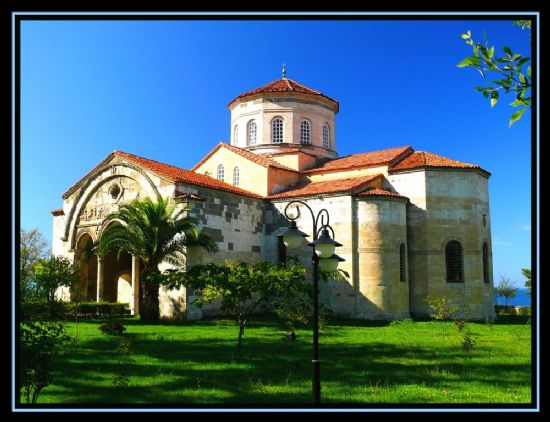

| 
| Trabzon Ayasofya Kilisesi Ýstanbul'un Latinler tarafindan iþgal edilmesinden sonra kaçan ve Trabzon'da 1204 yýlýnda yeni bir devlet kuran Kommenos ailesinden
Kral I. Manuel (1238-1263) tarafýndan 1250-1260 yýllarý arasýnda yaptýrýlmýþ olan manastir kilisesi.
Ayasofya adý "Kutsal Bilgelik" anlamina gelir.
|
|
 sümela Manastýrý tarihi dokusuyla Trabzon’un en önemli yerlerinden biridir. Trabzon’un Maçka ilçesine ait Altýndere köyünde bulunan yapý, bir daðýn yamacýna yapýlmýþtýr.
Yunanlýlar ise Panagia adýný vermiþtir.MS 365-395 yýllarýnda yapýlan Sümela Manastýrý, Anadolu’daki Kapadokya kiliseleri tarzýndadýr. Önce kilise amacýyla yapýlmýþ ve manastýra dönüþtürülmüþtür.
Ancak bu dönüþüm ile ilgili bir bilgi bulunmamaktadýr. Rivayetlere göre Ýsa’nýn öðrencilerinden olan Aziz Luka rüyasýnda, Meryem’i bebek Ýsa’nýn kollarýndan tutar þekilde bu manastýrýn yapýlacaðý yerde görmüþtür.
|
 Trabzon, Atatürk Köþkü Müzesi. Trabzon'a hakim Soðuksu sýrtlarýnda, çam ormanlarý içinde yer alan bina,
Kostantin Kabayanidis tarafýndan 1890 yýlýnda yazlýk olarak yaptýrýlmýþtýr.
Avrupa ve Batý Rönesans mimarisinin etkilerini taþýyan binada büyük ve gösteriþli Avrupa simgeleri kullanýlmýþtýr.
|
 11 Mar 2016 - Mükemmel yeþilliði ile herkesin ilgisini toplayan
Karadeniz'in, en gözde þehirlerinden biri de Trabzon'dur. Trabzon'da yer alan Boztepe, Trabzon þehrini üzerine
inþa edilen, açýk oturma çay bahçesi þeklinde yer alan ve ayrýca içerisinde
kapalý çardaklar da bulunan turistik bir yerdir.
|